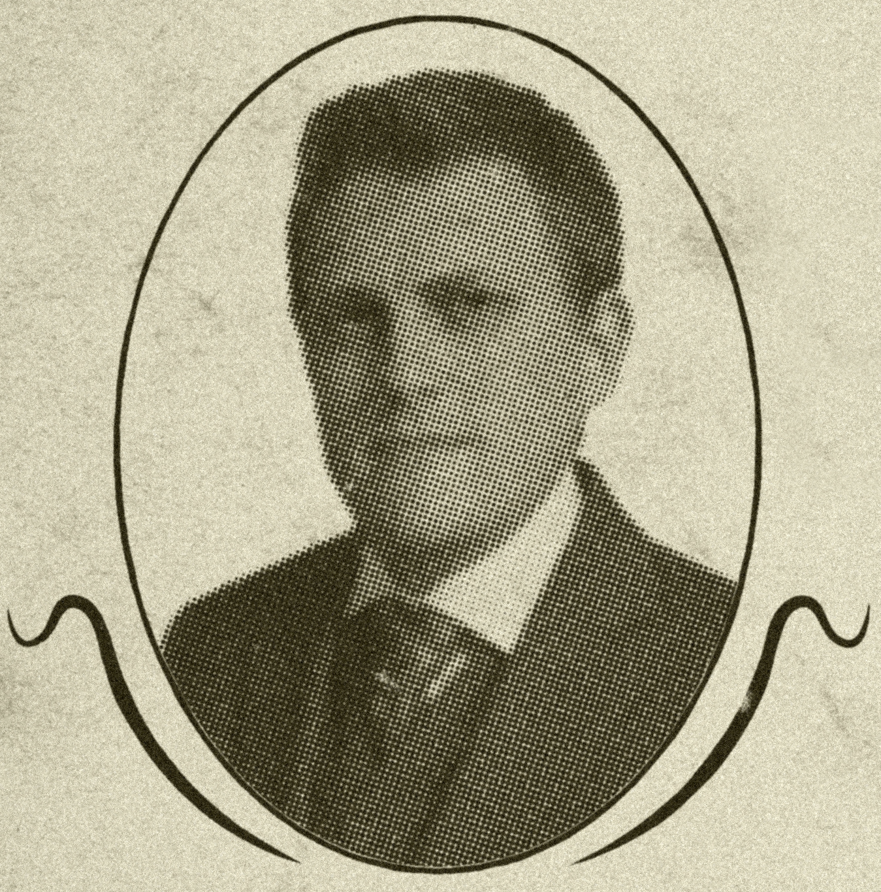
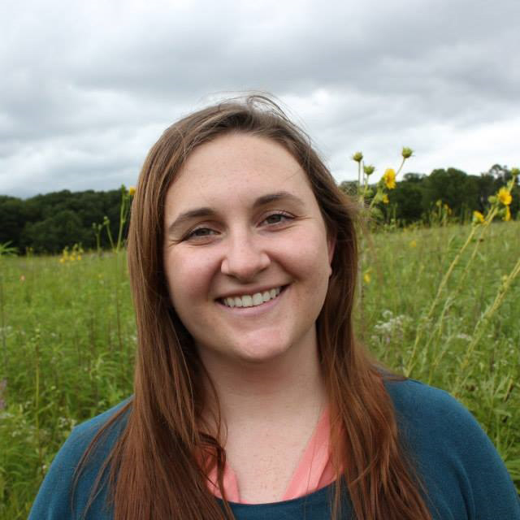

Contact
The UW Cartography Lab can help you produce a beautifully designed piece of work. Don't hesitate to contact us and see if we can help you!
E-mail: UWCartLab@gmail.com
Address:
Attn: Cartography Lab
Science Hall
550 N. Park St.
Madison, WI 53706
Attn: Cartography Lab
Science Hall
550 N. Park St.
Madison, WI 53706
Phone Number: 608-262-1363
Director - Jim Burt
Assistant Director - Tanya Buckingham
Students and Staff
Vanessa Knoppke-Wetzel - Project Assistant
Vanessa is a second year student Mastering in Cartography/GIS and is the current Project Assistant for the Cartography Lab. She graduated from UW-Madison with three majors: Geography with people/environment emphasis, Cartography/GIS, and Spanish Linguistics.
Daniel Huffman - Honorary Fellow
Daniel Huffman - Honorary Fellow

 Personal Portfolio
Personal Portfolio
Daniel Huffman makes, and sometimes writes about, maps. He is concerned with cartographic aesthetics, and how to promote maps as artistic objects that function through their beauty as much as their data.
Peter Bauknecht - Cartographer
Brian is a second year Masters student in the Cartography/GIS program. He received his undergraduate degree from the University of South Carolina - Columbia in Geography with an emphasis in GIS. He has enjoyed his first full year in Wisconsin and is ready for the next!

Sarah Bennett - Cartographer
Sarah Bennett is working on her PhD in Geography. She is visualizing how relationships play out in gestures, especially between people and animals. She is interested in mapping movement and in the cultural and environmental implications of maps. She loves to dance.

Brian Davidson - Cartographer
Brian is a second year Masters student in the Cartography/GIS program. He received his undergraduate degree from the University of South Carolina - Columbia in Geography with an emphasis in GIS. He has enjoyed his first full year in Wisconsin and is ready for the next!
Rich Donohue - Cartographer
Brian is a second year Masters student in the Cartography/GIS program. He received his undergraduate degree from the University of South Carolina - Columbia in Geography with an emphasis in GIS. He has enjoyed his first full year in Wisconsin and is ready for the next!

Erin Hamilton - Cartographer
Erin Hamilton - Cartographer
Personal Portfolio
Erin is a cartography and GIS Master's student with an interest in creating robust web applications and engaging interactive visualizations. She is also a project assistant at the University of Wisconsin Sea Grant Institute where she builds tools and web applications concerning coastal issues of the Great Lakes.
Brooke Harding - Cartographer
Brian is a second year Masters student in the Cartography/GIS program. He received his undergraduate degree from the University of South Carolina - Columbia in Geography with an emphasis in GIS. He has enjoyed his first full year in Wisconsin and is ready for the next!
Rashauna Mead - Cartographer
Brian is a second year Masters student in the Cartography/GIS program. He received his undergraduate degree from the University of South Carolina - Columbia in Geography with an emphasis in GIS. He has enjoyed his first full year in Wisconsin and is ready for the next!
Dylan Moriarty - Cartographer
Brian is a second year Masters student in the Cartography/GIS program. He received his undergraduate degree from the University of South Carolina - Columbia in Geography with an emphasis in GIS. He has enjoyed his first full year in Wisconsin and is ready for the next!
Laura Poplett - Cartographer
Brian is a second year Masters student in the Cartography/GIS program. He received his undergraduate degree from the University of South Carolina - Columbia in Geography with an emphasis in GIS. He has enjoyed his first full year in Wisconsin and is ready for the next!
Chloe Quinn - Cartographer
Brian is a second year Masters student in the Cartography/GIS program. He received his undergraduate degree from the University of South Carolina - Columbia in Geography with an emphasis in GIS. He has enjoyed his first full year in Wisconsin and is ready for the next!
Caroline Rose - Cartographer
Brian is a second year Masters student in the Cartography/GIS program. He received his undergraduate degree from the University of South Carolina - Columbia in Geography with an emphasis in GIS. He has enjoyed his first full year in Wisconsin and is ready for the next!

Carl Sack - Cartographer |
Carl Sack is an activist cartographer and Ph.D. candidate in Cart/GIS. His work and research interests are online participatory mapping, crowdsourced geographic information, user-centered design, Indigenous counter-mapping, and social and environmental activism. His projects include online wikimaps, thematic web maps, print maps, research on new web mapping techniques, and teaching. When not in the Cart Lab, he enjoys running, biking, canoeing, and exploring new places.